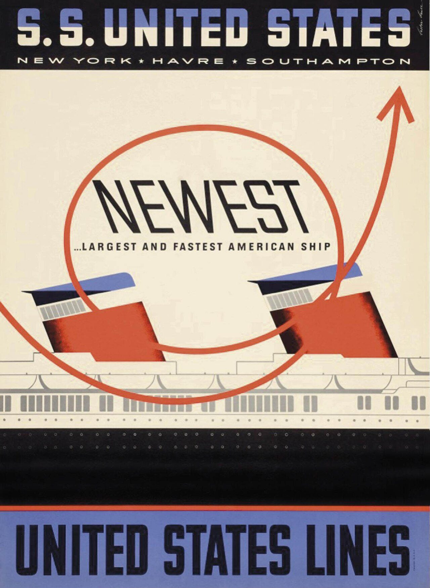

References / Poster / 322
S.S. United States poster
Lester Beall loops a single red arrow around the word NEWEST and the ship’s two funnels, on cream paper between heavy black and blue bands.
- Source
- Wikimedia Commons: 1951 SS United States Travel Poster by Lester Thomas Beall (1).jpg
- Creator
- Lester Beall
- Made
- 1952 (Commons date; the file name says 1951)
- Style
- Mid-century modern (agent-proposed, not yet reviewed by a person)
- Moods
- Confident, modern, optimistic
- Evidence
- Downloaded and inspected the 1280 × 1751 px Commons rendition of the scan (original 1358 × 1858 px). Commons names the Smithsonian National Museum of American History (nmah_1102295) as the source, but that page returned HTTP 403 to scripts and to WebFetch, so the museum record was not read.
- Reviewed
- Rights
- Open license, stored. License: public domain. Rights policy
.jpg){kind=link}
Context
The Commons description says Lester Beall designed the poster for United States Lines as part of his wider graphic design for the ship’s identity, and that the line advertised the SS United States as the largest and fastest passenger ship built in the United States. Commons.jpg).
Beall lived from 1903 to 1969. Wikidata.
Observed
- A black band at the top carries “S.S. UNITED STATES” in heavy slab-like capitals, cream with the upper half tinted blue, and “NEW YORK ★ HAVRE ★ SOUTHAMPTON” in widely spaced geometric sans capitals.
- The middle is cream paper. A thin red line loops once around the word “NEWEST” and ends in an arrowhead at the upper right.
- “NEWEST” is set in thin, tall, slightly italic capitals; “…LARGEST AND FASTEST AMERICAN SHIP” below is a bold condensed sans.
- Two raked funnels are flat red with blue caps, black bands, and a soft dark edge on one side. Below them the superstructure is drawn in gray outline with rows of windows and dots.
- A black hull band crosses the lower third. A blue band at the foot holds “UNITED STATES LINES” in heavy condensed black capitals.
- A small signature is visible at the upper right corner.
Why it belongs
The single looping arrow is a hand gesture laid over otherwise mechanical drawing: the mix of the drawn and the engineered that marks American graphic modernism of the period.
Four typefaces in one poster, from thin display to heavy condensed, show the style’s loose, mixed typography. Measured on the stored image: cream background (#f1e6d2), accent chroma 0.54.
Borrow
Let one thin colored line loop around a heading and exit as an arrow.
Frame a cream field between a heavy dark top band and a colored bottom band.
Measured
Machine-extracted by tools/image-traits.py on . Full measurement.
- Mean chroma
- 0.14
- Palette
- #f1e6d2 45%
- #1a181b 17%
- #6975ac 10%
- #cd5b3d 7%
- #0c0c0d 6%
- #2c2423 2%
- #b1aba1 2%
- #dfd3c0 2%

